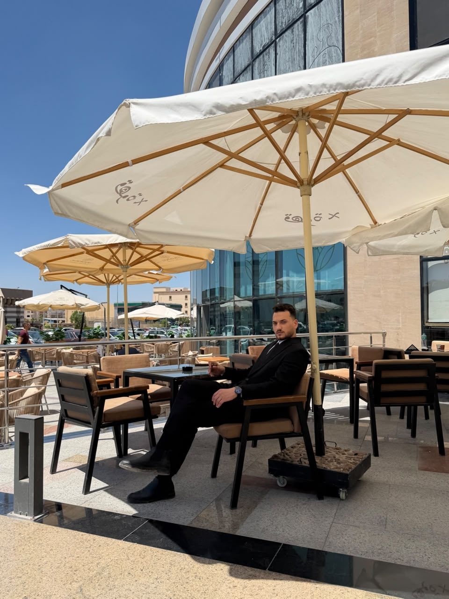
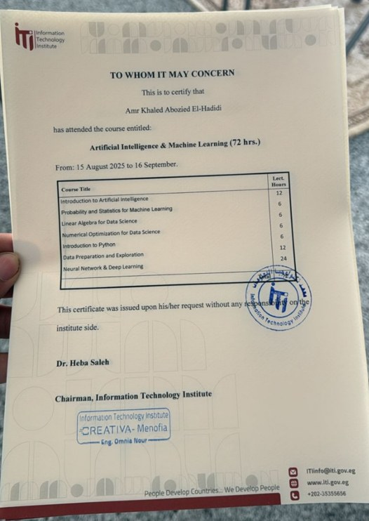
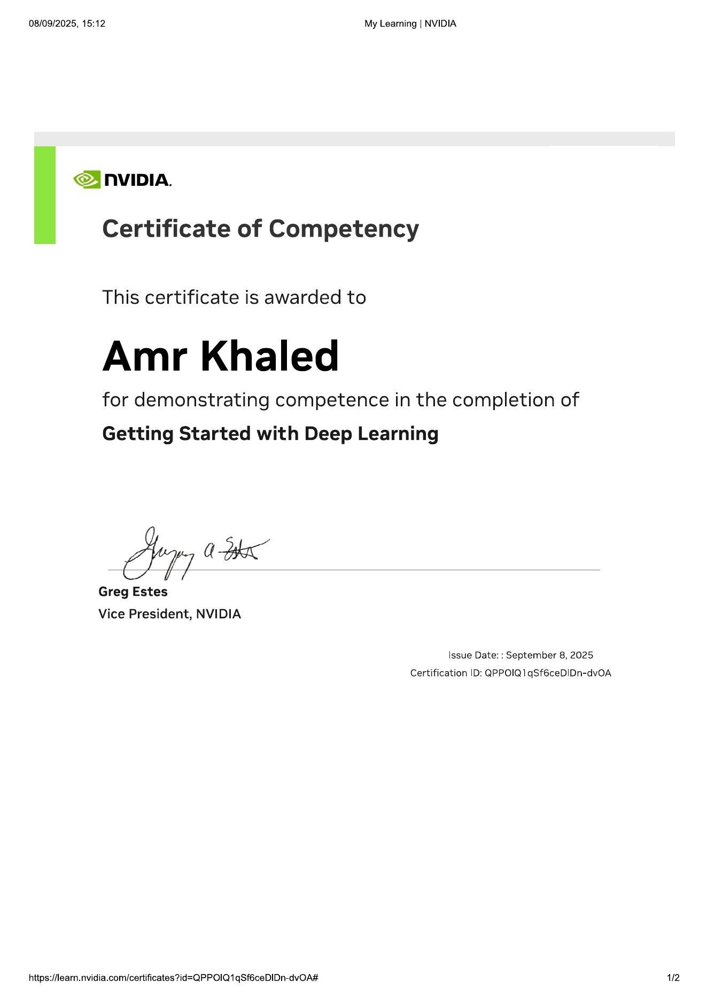
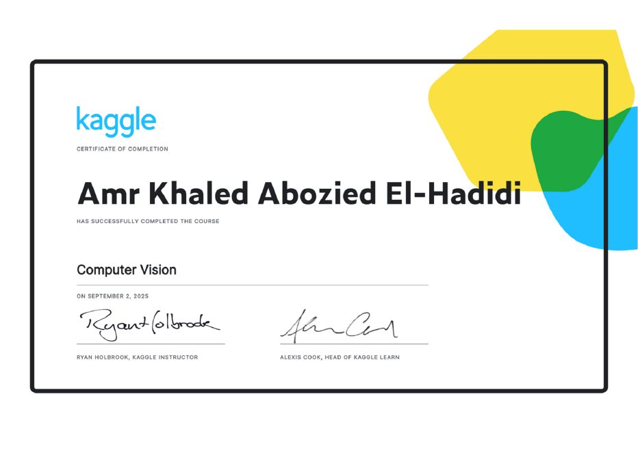
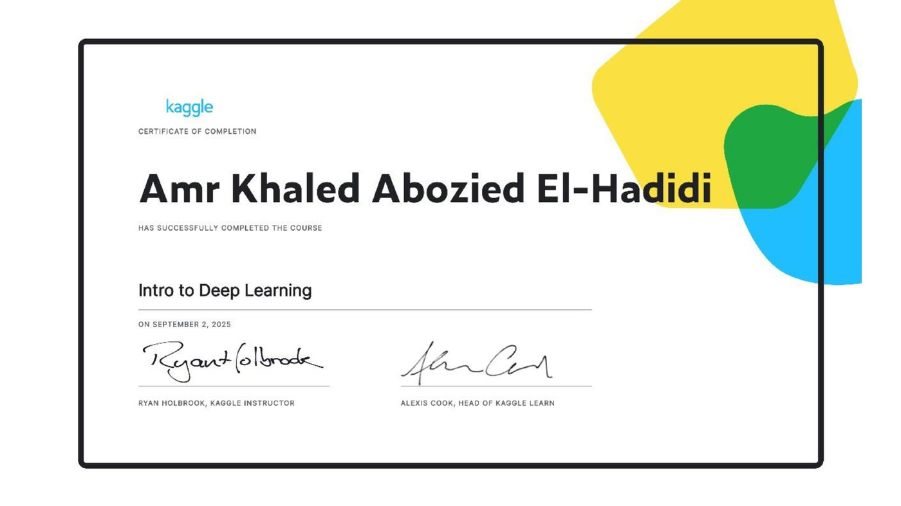

مؤسس TECHNO MINDS
م. عمرو خالد
Software Engineer • Web Developer • AI & Robotics Engineer • Instructor
مهندس برمجيات ومطور ويب، يعمل على تطوير الأنظمة والمنصات التعليمية بتقنيات الويب الحديثة وقواعد البيانات والخدمات السحابية.
يعمل كذلك في الذكاء الاصطناعي والروبوتكس والإلكترونيات وArduino والأنظمة المدمجة وتصميم وتصنيع PCB؛ من البرمجة وتصميم الدوائر واختيار المكونات والتوصيل والمحاكاة، إلى التجميع واللحام والاختبار وتنفيذ المشاريع.
يقدّم تدريبًا عمليًا في هذه المجالات، مع التركيز على فهم الأساسيات وبناء مشاريع حقيقية قابلة للتطبيق.
خبرات هندسية وتطبيق عملي
مجالات العمل والخبرة
البرمجيات والهاردوير والتدريب، في مسار عملي من الفكرة إلى التنفيذ.
هندسة البرمجيات
Software Engineering
تصميم تطبيقات متصلة بالبيانات والخدمات السحابية، مع الاهتمام بالأداء والاختبار.
المهارات والتطبيقات
- Application Architecture
- Front-End Development
- Full-Stack Development
- Database-connected Applications
- Cloud-connected Systems
- Performance Optimization
- Testing / QA
تطوير الويب
Web Development
تطوير مواقع وتطبيقات ويب سريعة ومتجاوبة، بواجهات عربية تدعم RTL.
المهارات والتطبيقات
- HTML
- CSS
- JavaScript
- Responsive Web Development
- Firebase
- Git
- GitHub
- Vercel
- Web Applications
- Arabic RTL UI
الذكاء الاصطناعي
Artificial Intelligence
فهم مفاهيم الذكاء الاصطناعي وتوظيفها في تطبيقات وتكاملات عملية وتعليمها بالمشروعات.
المهارات والتطبيقات
- AI Concepts
- AI Applications
- AI Integrations
- Intelligent Systems
- Practical AI Education
هندسة الروبوتكس
Robotics Engineering
تنفيذ مشروعات تجمع الحساسات والمحركات ومنطق التحكم مع البرمجة والهاردوير.
المهارات والتطبيقات
- Robotics Projects
- Sensors
- Motors
- Motor Drivers
- Control Logic
- Arduino Robotics
- Hardware / Software Integration
هندسة الإلكترونيات
Electronics Engineering
مجال هندسي مستقل: تصميم وتحليل الدوائر، تنفيذ النماذج، التوصيل واللحام، ثم القياس وإصلاح الأعطال.
المهارات والتطبيقات
- Electronic Components
- Analog Electronics
- Digital Electronics
- Circuit Design
- Circuit Analysis
- Sensors
- Actuators
- Power Circuits
- Breadboard Prototyping
- Wiring
- Soldering
- Circuit Testing
- Troubleshooting
الأنظمة المدمجة وArduino
Embedded Systems & Arduino Engineering
برمجة المتحكمات وربط الحساسات والتحكم في المشغلات والمحركات داخل مشروعات عملية.
المهارات والتطبيقات
- Arduino
- Embedded Systems
- Sensor Interfacing
- Actuator Control
- Motor Control
- Microcontroller Projects
- Hardware / Software Integration
تصميم وتصنيع PCB
PCB Design & Fabrication
تنفيذ عملي يبدأ بالمخطط وتوزيع المكونات والمسارات، ويشمل التصنيع والثقب واللحام والتجميع والاختبار.
المهارات والتطبيقات
- KiCad
- Schematic Design
- PCB Layout
- Component Placement
- Routing
- PCB Fabrication
- Drilling
- Soldering
- Assembly
- Testing
- Troubleshooting
التدريس والتدريب العملي
Teaching & Training
Instructor في البرمجة والويب والذكاء الاصطناعي والروبوتكس والإلكترونيات. التعلّم يبدأ بفهم الفكرة، ثم بناء مشروع وتجربته وتحسينه.
المهارات والتطبيقات
- Programming
- Web Development
- Artificial Intelligence
- Robotics
- Electronics
- Arduino
- Embedded Systems
- PCB Design
أدوات التنفيذ
التقنيات والأدوات
الويب
- HTML
- CSS
- JavaScript
- Firebase
- Git
- GitHub
- Vercel
البرمجة
- Python
- JavaScript
الروبوتكس والأنظمة المدمجة
- Arduino
- Sensors
- Motors
- Motor Drivers
الإلكترونيات وPCB
- KiCad
- Circuit Design
- PCB Layout
- Soldering
- Testing
طريقة Techno Minds
تدريب عملي قائم على المشروعات
كود حقيقي
الطالب يكتب ويشغّل ويصلح الخطأ بنفسه داخل المعمل العملي.
فهم المستقبل
فهم المفاهيم ثم تطبيقها في البرمجة والذكاء الاصطناعي والروبوتكس والإلكترونيات.
متابعة واضحة
حضور وواجب وتطبيق ودرجات وتقارير متاحة للطالب وولي الأمر.
الشهادات والتعلّم المستمر
شهادات في الذكاء الاصطناعي والتعلّم العميق
نماذج من الشهادات المهنية المضافة إلى ملف المنصة.




Python DevelopmentAI EngineeringML Machine LearningCV Computer VisionDL Deep LearningFE Front-EndIoT Hardware & IoT
ابدأ تجربة عملية